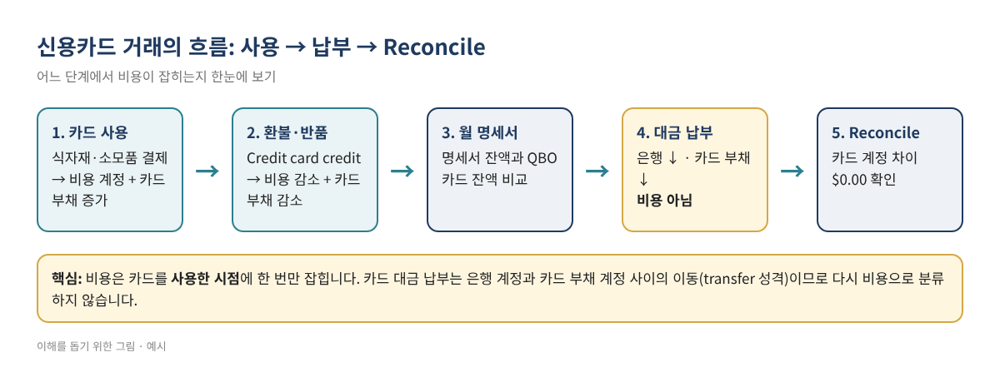
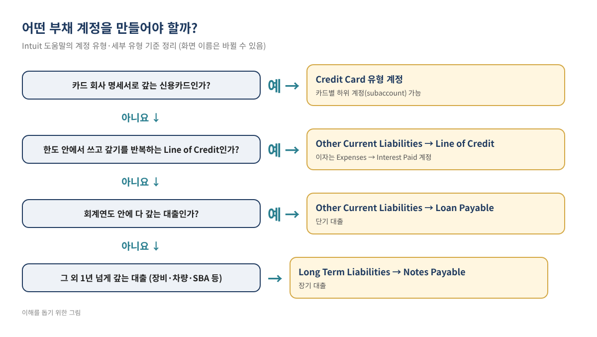
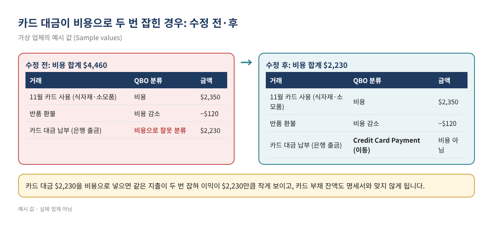
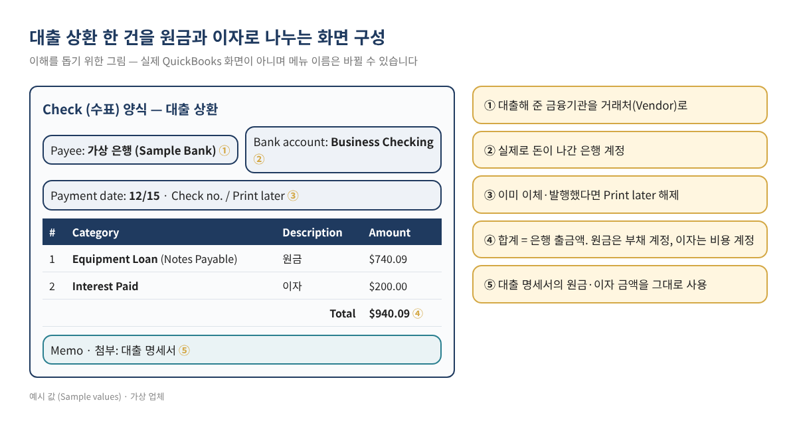

카드 대금이 비용으로 두 번 잡히고 있다면: QBO 신용카드·대출 기록법 (카드 대금 납부, 원금·이자 나누기)
QuickBooks Online(QBO)에서 손익계산서를 열었는데 비용이 생각보다 훨씬 크게 나온다면, 가장 먼저 의심해 볼 곳이 신용카드 대금과 대출 상환입니다. 카드로 산 물건은 이미 비용으로 들어가 있는데, 한 달 뒤 은행에서 카드 대금이 빠져나갈 때 그 출금을 또 "비용"으로 분류하면 같은 지출이 두 번 잡힙니다. 대출도 비슷합니다. 매달 은행에서 나가는 상환액 전체를 이자 비용으로 넣으면 원금까지 비용이 되어 이익이 줄어 보이고, 대출 잔액은 장부에서 전혀 줄지 않습니다.
이 글은 신용카드와 대출을 QBO에서 부채(Liability) 계정으로 세팅하고, 카드 사용·환불·대금 납부, 대출금 수령·상환을 각각 어떻게 기록하는지 단계별로 정리합니다. 특히 매달 상환액을 원금과 이자로 나누는 방법을 예시 숫자와 함께 보여 드립니다. 시리즈 첫 글 QuickBooks Online 기초 가이드에서 짧게 다룬 내용을 자세히 풀어 쓴 글이며, 은행 연결과 Match·Add·Rule 글을 먼저 보시면 이해가 빠릅니다.
이런 분께 필요합니다 ☐ 카드 대금 납부를 어떤 카테고리로 분류해야 할지 헷갈리는 분 ☐ 손익계산서의 비용이 카드 명세서 합계보다 훨씬 큰 분 ☐ 장비·차량·SBA 대출을 받았는데 QBO에 대출 잔액이 보이지 않는 분 ☐ 매달 대출 상환액 전체를 "Interest" 비용으로 넣어 온 분 ☐ 카드 여러 장을 한 카드 회사 계정 아래에서 관리하고 싶은 분
1. 먼저 원리: 카드와 대출은 "빚" 계정입니다
신용카드 잔액과 대출 잔액은 모두 갚아야 할 돈, 즉 부채입니다. 그래서 QBO에서는 은행 계정처럼 대차대조표(Balance Sheet)에 나타나는 별도의 계정으로 관리합니다. 비용은 돈을 쓴 내용(식자재, 소모품, 이자 등)에 따라 잡히고, 카드 대금 납부나 대출 원금 상환은 은행에서 부채로 돈이 옮겨 가는 거래일 뿐입니다. 아래 표는 거래마다 장부의 어느 숫자가 움직이는지 정리한 것입니다.
| 거래 | 은행 잔액 | 카드·대출 잔액(부채) | 비용(손익) |
|---|---|---|---|
| 카드로 소모품 구입 | 변동 없음 | 증가 | 증가 (소모품비 등) |
| 카드 구매 환불 | 변동 없음 | 감소 | 감소 (원래 비용 계정) |
| 카드 대금 납부 | 감소 | 감소 | 변동 없음 |
| 대출금 입금 | 증가 | 증가 | 변동 없음 (수입 아님) |
| 대출 상환 – 원금 부분 | 감소 | 감소 | 변동 없음 |
| 대출 상환 – 이자 부분 | 감소 | 변동 없음 | 증가 (이자 비용) |
이 표 하나만 기억해도 대부분의 실수를 막을 수 있습니다. 비용이 늘어나는 것은 "돈을 써서 무언가를 얻었을 때"와 "이자를 냈을 때"뿐이고, 빚을 갚는 행위 자체는 비용이 아닙니다.

2. 어떤 부채 계정을 만들어야 하나
Intuit 도움말은 부채의 성격에 따라 계정 유형(Account type)과 세부 유형(Detail type)을 다르게 고르도록 안내합니다. 계정은 Chart of accounts에서 New를 눌러 만듭니다. 메뉴 위치는 자주 바뀌므로 왼쪽 메뉴의 All apps → Accounting → Chart of accounts, 또는 Settings ⚙ → Chart of accounts에서 찾거나 검색창에 "Chart of accounts"를 입력하십시오.
| 부채 종류 | Account type | Detail type | 계정 이름 예시 |
|---|---|---|---|
| 사업용 신용카드 | Credit Card | Credit Card | Biz Card ‑ 1234 (예시) |
| Line of Credit (한도 대출) | Other Current Liabilities | Line of Credit | LOC ‑ 거래 은행 (예시) |
| 회계연도 안에 다 갚는 대출 | Other Current Liabilities | Loan Payable | 단기 운영자금 대출 (예시) |
| 1년 넘게 갚는 대출 (장비·차량 등) | Long Term Liabilities | Notes Payable | Equipment Loan (예시) |
| 대출 이자 | Expenses | Interest Paid | Interest Expense (예시) |
카드 번호 전체를 계정 이름에 넣지 마시고, 끝 네 자리 정도만 쓰는 것이 안전합니다. 카드 회사 하나에 카드가 여러 장(사장님 카드, 매니저 카드 등)이라면 Intuit 도움말이 안내하는 것처럼 상위(parent) 카드 계정 아래에 카드별 하위 계정(subaccount)을 두는 방식이 흔합니다. 이때 은행 연결은 상위 계정과 하위 계정 중 한쪽만 연결할 수 있고, Reconcile은 하위 계정 거래가 합쳐지는 상위 계정에서 합니다.

팁: 이미 몇 달 사용한 카드나 이미 상환 중인 대출을 처음 등록할 때는 시작 시점의 잔액을 기초 잔액으로 넣게 됩니다. 기초 잔액은 Opening Balance Equity로 들어가므로 나중에 정리가 필요합니다. 자세한 내용은 기초 잔액과 Chart of Accounts 세팅과 Opening Balance Equity 정리 글을 참고하십시오.
3. 신용카드 사용과 환불 기록하기
3-1. 카드 사용: 은행 연결이 기본, 수동 입력은 Expense
카드 계정을 카드 회사와 연결해 두면 사용 내역이 Bank transactions 화면으로 들어오고, 은행 거래와 똑같이 카테고리를 고르거나 Rule로 자동 분류할 수 있습니다. 연결하지 않은 카드라면 직접 입력합니다.
- + Create(화면에 따라 + New)를 누르고 Expense를 선택합니다.
- Payee에 거래처(가게 이름)를 고릅니다.
- Payment account에 은행 계정이 아니라 해당 카드 계정을 선택합니다. 이것이 "카드로 냈다"는 표시입니다.
- Payment date에 카드 결제일을 넣습니다.
- Category details에 비용 계정(예: Supplies)과 금액을 넣고, 필요하면 영수증 사진을 첨부합니다.
- Save and close로 저장합니다.
영수증을 휴대폰으로 찍어 카드 거래에 바로 연결하는 방법은 영수증 관리 글에서 다뤘습니다. 은행 연결로 들어온 거래와 수동 입력 거래가 겹치면 같은 지출이 두 번 들어가므로, 연결된 카드는 되도록 수동 입력을 하지 말고 들어온 거래를 Match하십시오.
3-2. 환불·반품: Credit card credit
물건을 반품해서 카드로 환불을 받았다면 다음과 같이 기록합니다.
- + Create → Credit card credit을 선택합니다.
- Payee에 환불해 준 거래처를 고릅니다.
- 카드 계정 선택란(Bank/Credit account)에서 환불이 들어온 카드를 고릅니다.
- 날짜와 금액을 넣고, Category는 처음 구입할 때 쓴 비용 계정과 똑같이 맞춥니다.
- Save and close로 저장합니다.
카테고리를 원래 비용 계정과 같게 해야 비용이 정확히 줄어듭니다. 환불을 "기타 수입"으로 넣으면 수입과 비용이 함께 부풀려집니다.
4. 카드 대금 납부 기록하기: 세 가지 방법
카드 대금 납부는 은행 계정에서 카드 계정으로 돈이 옮겨 가는 거래입니다. Intuit 도움말은 상황에 따라 세 가지 방법을 안내하며, 어느 방법이든 비용 계정은 쓰지 않는다는 점이 같습니다. Intuit은 납부를 기록하기 전에 카드 계정을 먼저 Reconcile해 두라고 권합니다.
| 방법 | 메뉴 | 이럴 때 씁니다 | 주의 |
|---|---|---|---|
| A. Pay down credit card | + Create → Other 아래 Pay down credit card | 은행 연결 없이 직접 입력할 때 | 수표로 냈다면 "I made a payment with a check"를 선택하고 수표 번호 입력 |
| B. Check | + Create → Vendors 아래 Check | 수표로 카드 대금을 보냈을 때 | 이미 발행한 수표면 Print later 해제 |
| C. Bank transactions에서 Credit Card Payment | All apps → Accounting → Bank transactions | 은행 계정과 카드 계정이 둘 다 연결되어 있을 때 | 은행 쪽 출금과 카드 쪽 입금이 각각 들어오므로 한 쌍으로 묶어야 함 |
4-1. 방법 C 자세히: 두 계정이 모두 연결된 경우
은행과 카드가 모두 연결되어 있으면 같은 납부가 두 번 보입니다. 은행 계정에는 출금으로, 카드 계정에는 납부(입금)로 들어옵니다. 하나는 비용으로, 하나는 수입으로 넣으면 장부가 크게 틀어지므로 다음 순서로 처리합니다.
- Bank transactions에서 은행 계정을 고르고 카드 대금 출금 거래를 엽니다.
- Transaction type을 Credit Card Payment로 바꾸고 받는 쪽 카드 계정을 선택합니다.
- Match/Categorize 영역에 카드 쪽 거래와 짝을 지어 주는 Pair 표시가 있는지 확인합니다. 보이지 않으면 카드 계정의 Pending 목록에서 해당 거래를 찾아 Action의 Match로 직접 짝을 지어 줍니다.
- Post를 눌러 확정합니다.

5. 카드 계정 Reconcile
카드 계정도 은행 계정처럼 매달 명세서와 맞춰 보는 것이 기본입니다. Intuit 도움말은 명세서를 받을 때마다 매달 하는 것을 권합니다.
- All apps → Accounting → Reconcile(또는 Settings ⚙ → Reconcile)로 이동합니다.
- Account에서 카드 계정(하위 계정이 있다면 상위 계정)을 고릅니다.
- 카드 명세서의 Ending balance와 Ending date를 입력하고 Start reconciling을 누릅니다.
- 명세서에 있는 사용·환불·납부를 하나씩 체크해 Difference가 $0.00이 되면 Finish now를 누릅니다.
차이가 남으면 자동 조정 분개로 덮기보다 원인을 찾는 것이 좋습니다. 중복 거래나 빠진 환불이 흔한 원인이며, 찾는 방법은 중복 거래와 Reconcile 차이 찾기에 정리해 두었습니다.
6. 대출 기록하기: 받을 때와 갚을 때
6-1. 대출금이 은행 계좌로 들어온 경우
- 2장의 표대로 대출 계정을 만듭니다. 새로 받은 대출이라면 Intuit 도움말 안내대로 계정의 기초 잔액(Opening balance)은 $0으로 둡니다.
- 은행 피드에 들어온 대출금 입금을 처리할 때 카테고리로 대출 계정을 선택합니다. 대출금은 갚아야 할 돈이므로 매출이나 기타 수입으로 분류하지 않습니다.
- 은행 피드를 쓰지 않는다면 Bank deposit 양식으로 입금을 기록하면서 계정을 대출 계정으로 지정하면 같은 결과가 됩니다.
이미 상환 중인 대출을 중간에 등록한다면 추적을 시작하는 날짜의 잔액을 기초 잔액으로 넣습니다. 이 경우 기초 잔액이 Opening Balance Equity로 들어가므로, Intuit은 상황에 따라 별도의 분개가 필요하다고 안내합니다. 이 부분은 회계 담당자와 함께 확인하는 편이 안전합니다.
6-2. 대출금이 장비·차량 판매처로 바로 지급된 경우
은행 계좌를 거치지 않고 대출 기관이 판매처에 돈을 바로 보냈다면 Intuit 도움말 방식대로 Journal entry로 기록합니다. + Create → Journal entry에서 첫 줄에 대출 계정을 고르고 대출 금액을 Credits에, 다음 줄에 장비·차량 같은 고정자산 계정을 고르고 같은 금액을 Debits에 넣습니다. 계약금·보상 판매(trade-in)·수수료·세금이 섞여 있다면 자산 금액 계산이 달라지므로 회계 담당자와 상의하라는 것이 Intuit의 안내입니다.
6-3. 매달 상환: 한 건을 원금과 이자로 나누기
대출 상환은 Check(또는 카드·자동이체라면 Expense) 한 건 안에 카테고리 줄을 두 개 만들어 기록합니다.
- + Create → Check(자동이체라면 Expense)를 엽니다.
- Payee에 대출 기관을, 은행 계정에 실제로 돈이 나간 계좌를 고릅니다.
- 첫째 줄 Category에 대출 계정(Notes Payable·Loan Payable·Line of Credit)을 고르고 원금 금액을 넣습니다.
- 둘째 줄 Category에 Interest Paid 유형의 이자 비용 계정을 고르고 이자 금액을 넣습니다.
- 합계가 은행 출금액과 같은지 확인하고, 대출 명세서를 첨부해 저장합니다.
원금과 이자 금액은 직접 계산하기보다 대출 기관의 월 명세서나 상환 스케줄(amortization schedule)에 나온 숫자를 그대로 쓰는 것이 가장 정확합니다. 이자를 일 단위로 계산하는 대출은 달마다 이자가 조금씩 다르기 때문입니다. 은행 피드에서 상환 출금을 처리할 때도 Split 기능으로 같은 두 줄을 만들 수 있습니다.

7. 예시: 가상 세탁소의 카드와 장비 대출
가상의 업체 "그린밸리 세탁소"를 예로 들어 보겠습니다. 모든 숫자는 설명을 위한 예시 값입니다.
카드: 11월에 사업용 카드로 세제·옷걸이 $1,450, 비닐 커버 $900을 결제했고(합계 $2,350), 비닐 커버 일부를 반품해 $120을 환불받았습니다. 명세서 잔액은 $2,230이고, 12월 10일 은행 계좌에서 $2,230을 납부했습니다. 바른 기록은 사용 두 건(Expense, 카드 계정), 환불 한 건(Credit card credit), 납부 한 건(Credit Card Payment)입니다. 11월 비용은 $2,230, 12월 10일 이후 카드 잔액은 $0입니다. 납부를 비용으로 넣으면 그림 3처럼 비용이 $4,460으로 부풀려집니다.
대출: 10월에 프레스 장비 구입을 위해 $30,000을 연 8%, 36개월 균등 상환 조건으로 빌렸고, 대출 기관이 장비 판매처에 바로 지급했습니다. 그래서 Journal entry로 장비 계정 $30,000(Debit), Equipment Loan 계정 $30,000(Credit)을 기록했습니다. 월 상환액은 $940.09입니다. 아래는 대출 기관 스케줄에 나온 처음 세 달 숫자라고 가정한 예시입니다.
| 회차 (예시 값 / Sample values) | 상환액 | 이자 → Interest Paid | 원금 → Equipment Loan | 상환 후 대출 잔액 |
|---|---|---|---|---|
| 1회차 | $940.09 | $200.00 | $740.09 | $29,259.91 |
| 2회차 | $940.09 | $195.07 | $745.02 | $28,514.89 |
| 3회차 | $940.09 | $190.10 | $749.99 | $27,764.90 |
| 3개월 합계 | $2,820.27 | $585.17 (비용) | $2,235.10 (부채 감소) | — |
세 달 동안 은행에서는 $2,820.27이 나갔지만 손익계산서에 잡히는 비용은 이자 $585.17뿐입니다. 상환액 전체를 이자로 넣었다면 비용이 $2,235.10만큼 많아지고, 대차대조표의 대출 잔액은 계속 $30,000으로 남아 대출 기관 명세서와 맞지 않았을 것입니다. 월말에 대차대조표의 Equipment Loan 잔액을 대출 명세서의 원금 잔액과 비교하는 습관을 들이면 이런 오류를 바로 잡을 수 있습니다.
8. 세금 신고와 연결되는 부분
IRS Publication 334(2025)는 사업과 관련된 빚에 대해 낸 이자는 일반적으로 사업 비용으로 공제할 수 있고, 대출금을 사업 비용에 썼다면 그 이자는 사업 관련 이자로 본다고 설명합니다. 이자를 따로 기록해야 하는 이유가 여기에 있습니다. 원금 상환은 빚을 갚는 것이므로 장부에서 비용이 아니라 부채 감소로 기록합니다. 다만 장비나 차량을 대출로 샀다면 그 자산의 비용 처리는 감가상각 등 별도 규칙을 따르므로 회계 담당자와 확인하십시오.
- 사업·개인 겸용 대출: Publication 334는 대출이 일부는 사업용, 일부는 개인용이라면 이자를 사업 부분과 개인 부분으로 나눠야 한다고 안내합니다. 개인 부분 이자는 Schedule C 비용이 아닙니다.
- 차량 대출 이자: 사업과 개인 용도로 함께 쓰는 차량이라면 사업 사용 비율에 해당하는 이자만 Schedule C에서 공제 대상이 될 수 있습니다. 개인 사용분에 대한 별도 공제 가능성 등은 차량 대출 이자 공제 정리 (2026) 글에서 다뤘습니다.
- 사업 이자 공제 한도: Publication 334는 일부 납세자는 사업 이자 공제가 제한된다고 밝히고, 대상 여부와 계산은 Form 8990 안내문(Instructions)을 보라고 합니다. 해당 여부는 매년 기준을 확인해야 합니다.
- 개인 카드로 낸 사업 비용, 사업 카드로 낸 개인 비용: 시리즈 12편(Owner's draw)에서 따로 다룰 예정입니다.
9. 흔한 실수
- 카드 대금 납부를 비용으로 분류: 같은 지출이 두 번 잡힙니다. 납부는 Credit Card Payment(이동)로 처리합니다.
- 은행·카드가 둘 다 연결됐는데 양쪽을 따로 Add: 은행 쪽은 비용, 카드 쪽은 수입으로 들어가 숫자가 이중으로 틀어집니다. 한 쌍으로 Pair 또는 Match해야 합니다.
- 대출 상환액 전체를 이자로 처리: 비용이 과다하고 대출 잔액이 줄지 않습니다. 명세서대로 원금·이자를 나눕니다.
- 대출금 입금을 매출이나 기타 수입으로 분류: 매출과 이익이 부풀려집니다. 대출 계정으로 분류합니다.
- 카드 환불을 다른 계정으로 처리: 원래 비용 계정과 같은 계정을 써야 비용이 정확히 줄어듭니다.
- 대출 계정을 한 번도 대출 명세서와 비교하지 않음: 카드처럼 대출 계정도 정기적으로 잔액을 맞춰 봅니다.
이미 몇 달 치를 잘못 분류해 두었다면 거래를 하나씩 고치거나 한 번에 재분류할 수 있습니다. 방법은 대량 재분류와 Journal Entry 정리 글을 참고하십시오.
10. 자주 묻는 질문 (FAQ)
Q1. 카드 대금을 Bill로 입력해도 되나요?
카드 사용 내역을 이미 카드 계정에 기록하고 있다면 카드 대금을 다시 Bill(외상 매입)로 만들 필요가 없습니다. Bill로 만들면서 비용 계정을 쓰면 중복이 됩니다. 외상 매입 관리는 Bill과 지출 관리 글에서 다뤘습니다.
Q2. 카드 이자나 연회비는 어떻게 기록하나요?
명세서에 찍힌 카드 이자(finance charge)는 카드 계정을 결제 계정으로 한 Expense로 기록하고 이자 비용 계정으로 분류하며, 연회비 같은 수수료는 은행·카드 수수료 계정으로 분류하는 방식이 흔합니다. 은행 피드로 들어온다면 그 거래를 해당 계정으로 분류하면 됩니다.
Q3. 대출 기관이 원금·이자 내역을 주지 않으면요?
대출 기관 온라인 계정의 거래 내역이나 연간 이자 명세서로 확인하는 것이 우선입니다. 숫자를 확인할 수 없는 동안 임시로 나눠 두었다면, 명세서를 받은 뒤 대출 계정 잔액이 명세서 원금 잔액과 맞도록 조정합니다.
Q4. Line of Credit에서 돈을 꺼내 쓰면 어떻게 기록하나요?
Intuit 도움말은 Line of Credit 계정에 대해 bill이나 expense를 기록하고, 다른 계정으로 돈을 옮길 때는 transfer로 기록하라고 안내합니다. 상환할 때는 일반 대출처럼 원금 줄(Line of Credit 계정)과 이자 줄(Interest Paid)로 나눕니다.
Q5. 카드 여러 장이 한 명세서로 나오는데 계정을 어떻게 나누나요?
상위 카드 계정 아래 카드별 하위 계정을 두면 카드별 사용을 볼 수 있고, Reconcile은 상위 계정에서 명세서 전체 잔액으로 합니다. 은행 연결은 상위와 하위 중 한쪽만 연결할 수 있습니다.
11. 셀프 체크
- ☐ 사업용 카드마다 Credit Card 유형 계정이 있고, 이름에 카드 번호 전체를 쓰지 않았다
- ☐ 대출마다 기간에 맞는 부채 계정(Loan Payable·Notes Payable·Line of Credit)을 만들었다
- ☐ 카드 대금 납부가 비용 계정에 하나도 없다 (Credit Card Payment 또는 Pay down credit card)
- ☐ 은행·카드가 모두 연결된 경우 납부 거래를 한 쌍으로 Pair 또는 Match했다
- ☐ 카드 환불은 원래 비용 계정으로 Credit card credit 처리했다
- ☐ 대출 상환은 매번 원금 줄과 이자 줄로 나눴고, 대출 명세서를 첨부했다
- ☐ 대출금 입금을 매출·기타 수입으로 분류하지 않았다
- ☐ 카드 계정은 매달 Reconcile했고, 대출 계정 잔액을 대출 명세서와 비교했다
함께 보면 좋은 글
- QuickBooks Online 기초 가이드: 처음 시작할 때 꼭 알아야 할 10가지
- QBO 처음 시작하기: 기초 잔액과 Chart of Accounts 세팅
- 업종별 Chart of Accounts 예시
- QBO 은행 연결 완전 정리: Match, Add, Rule
- Bill과 지출 관리: 외상 매입, 일괄 지급
- 영수증 관리: 휴대폰으로 찍어 거래에 연결하기
- Opening Balance Equity 정리
- 중복 거래와 Reconcile 차이 찾기
- 차량 대출 이자 공제 정리 (2026)
이 글은 일반적인 교육용 정보이며 세무·법률·재무 자문이 아닙니다. 개별 상황에 대한 판단은 자격을 갖춘 전문가와 상의하십시오. QuickBooks Online의 화면, 메뉴 이름, 요금제별 기능과 가격은 수시로 바뀌므로 실제 작업 전에 현재 화면과 Intuit 및 IRS의 공식 안내를 확인하십시오. 예시의 업체, 거래처, 금액, 이자율은 모두 가상입니다.
QuickBooks is a registered trademark of Intuit Inc.; not affiliated with or endorsed by Intuit.
출처
- Intuit QuickBooks 도움말: Record your payments to credit cards in QuickBooks Online
- Intuit QuickBooks 도움말: Enter vendor credits and refunds in QuickBooks Online
- Intuit QuickBooks 도움말: Enter and manage expenses in QuickBooks Online
- Intuit QuickBooks 도움말: Reconcile an account in QuickBooks Online
- Intuit QuickBooks 도움말: About bank or credit card subaccount setup
- Intuit QuickBooks 도움말: Set up a loan in QuickBooks Online
- Intuit QuickBooks 도움말: Record a loan for an asset in QuickBooks Online
- Intuit QuickBooks 도움말: Manage a line of credit
- IRS: Publication 334 (2025), Tax Guide for Small Business